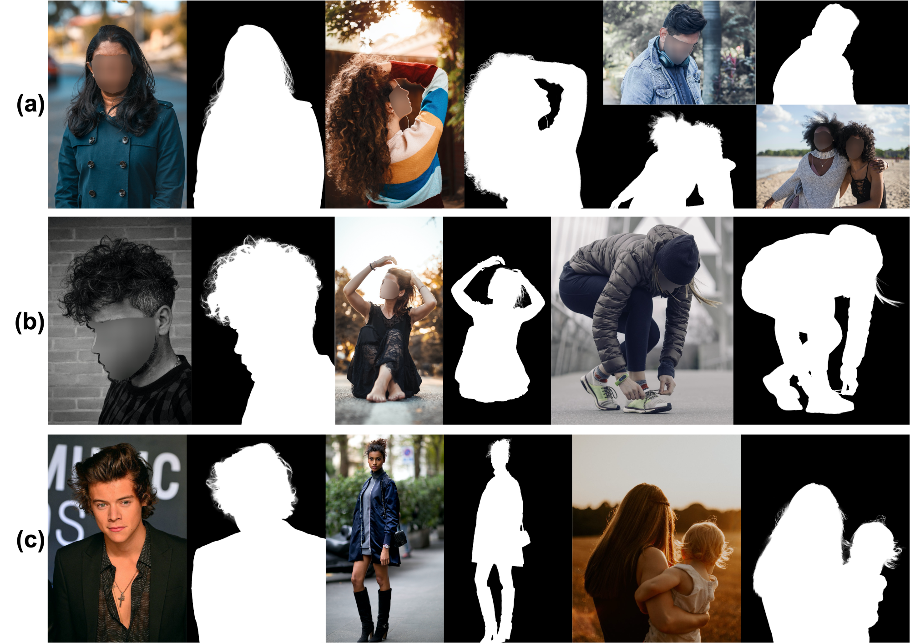

Segmentation · Image editing
Portrait Bokeh
Keep a portrait subject sharp while softly blurring the background.

What you’ll build
Predict foreground opacity and composite the portrait with a blurred copy: output = mask × image + (1 − mask) × blur(image).
Model and adaptation
SAM 1 ViT-B with a fine-tuned mask decoder and frozen encoders, followed by Gaussian background blur.
Portrait matting motivates careful treatment of soft boundaries. This course baseline approximates bokeh with a SAM 1 opacity mask and Gaussian blur; depth-aware optics and SAM 2 adaptation are optional extensions.
Data
Training
P3M-10k portrait images and alpha annotations; group related people, source images and sessions before splitting.
Evaluation
Held-out portraits with alpha masks; assess opacity and binary segmentation separately, then inspect the final composites.
How to measure success
- Opacity MAE ↓
- Error in continuous foreground opacity against the reference alpha.
- IoU / Dice ↑
- Foreground agreement after thresholding the masks.
- Boundary F1 ↑
- Contour quality around hair, shoulders and fine details.
- Visual review
- Inspect halos, background leakage and blur around subject edges.
What to submit
- A saved portrait-mask decoder and adjustable blur demo.
- Original, opacity mask and bokeh result examples.
- A baseline-versus-tuned segmentation and opacity report.
- An analysis of fine hair, multiple subjects and edge artifacts.